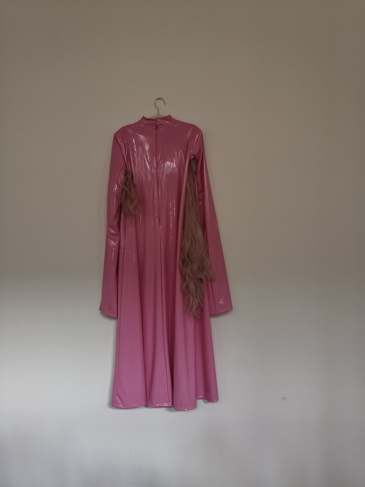

1 / 9
Performance / collective practice
Time Smuggler
The body as architecture. Transforming space by changing how we experience it.
Projects & productions
Performance / collective practice
The body as architecture. Transforming space by changing how we experience it.

Artistic research / digital image
A.PHANTASIA ~ FIELDS OF IMAGINING by Oyu Ocean features computer-generated and code-manipulated visuals of phosphenes and inner, usually unseen, experiences: glowing, shifting fields that probe the boundaries between sensory perception, mental imagery, and imagination.

Artistic research / cartography
In PHANTASMAGORIA - Kartographische Morphismen von Oyu Ocean werden Orte und Koordinaten zu Chiffren, zu Symbolen für Erfahrungen, Geschichten, Ereignisse, die tief berühren.

Performance / collaboration
Multimedia installation & performance, 15’00’’ in the frame of the exhibition FABULATIVE LORE: Tools and handiness, curated by Alicia Franzke & Kay Pommer, performed by Oyu Ocean and Jan Selçuk

Bookable performance / interview
Lapdance$Striptease Performance (interactive / spontaneous / participatory)

Performance / movement
The title of this piece – LNX– is an acronym to Lil Nas X.

Performance / documentation

Film / queer joy
POOLBOY celebrating queer joy

Collaboration / exhibition
Showing all 9 projects